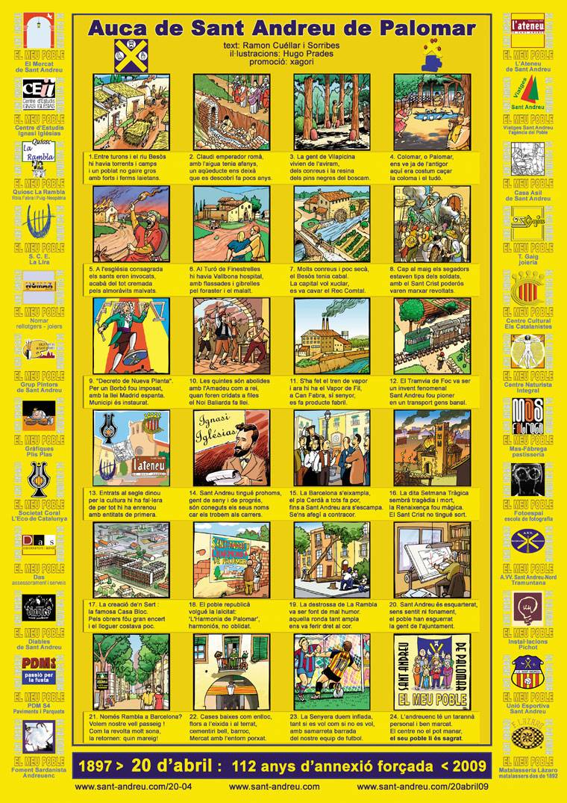

aconsegueix-la al
Quiosc La Rambla
les Auques de'n Ramon Cuéllar i Sorribes
Auques de símbols catalans
Auques d'indrets
Auques de persones
Auques de dates
Auques d'atuells i de coses
Auques de taula
Auca de les auques
Auca dels Aplecs de la sardana
una altra Auca dibuixada per l'Hugo Prades
Auca del Castellet
i el seu bloc